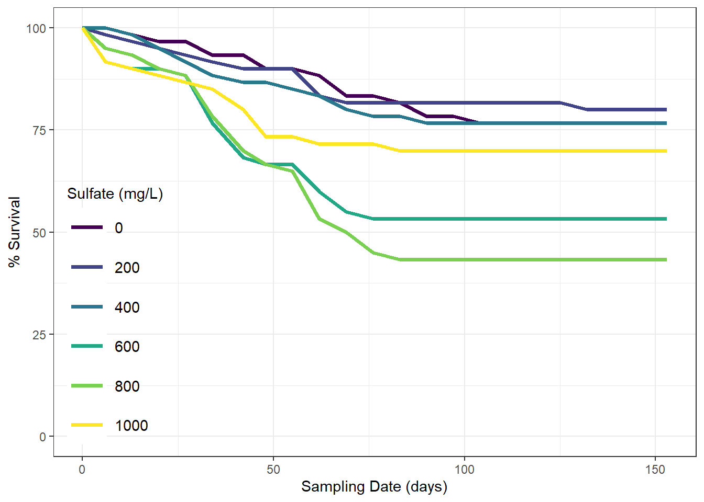
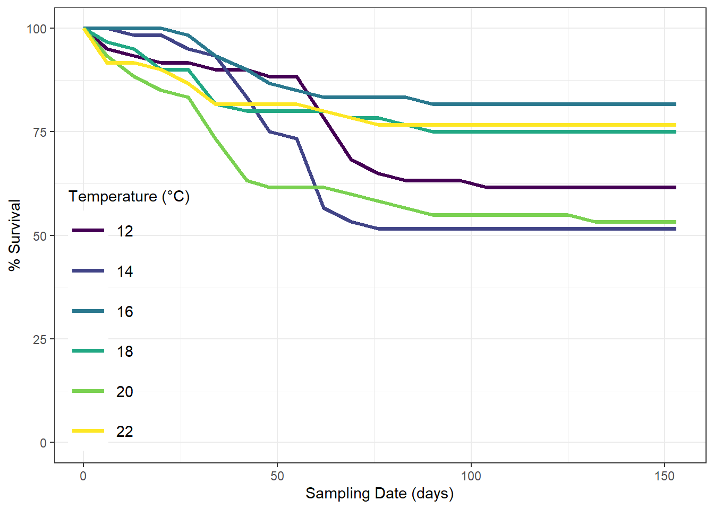
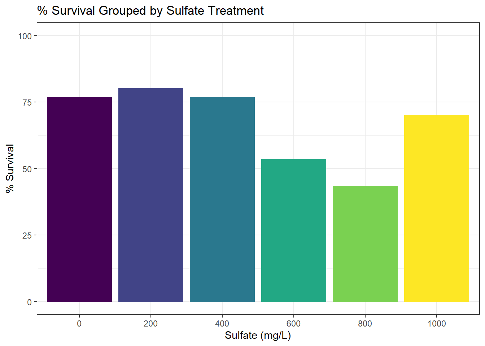
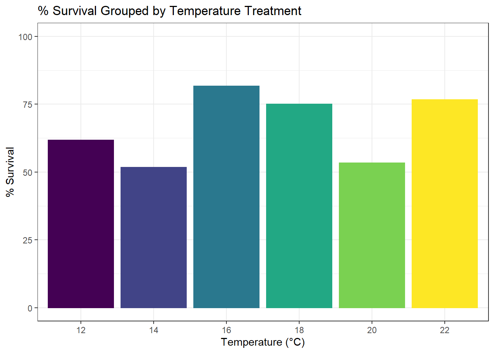

Chapter 3 Survival
3.1 Load in data
Now that the data are loaded into the database, let’s look at how survival in each group was affected by the treatments.
Load in survival data from database and add column to mutate dates into days for plot simplicity.
# get data from ptery_sulf_db database
surv <- dbGetQuery(ptery_sulf_db, "SELECT * FROM survival;")
# create sampling_date (date class) from date (character class)----
surv <- surv %>%
mutate(sampling_date = lubridate::ymd(date))
#create days column
surv <- surv %>%
mutate(days = sampling_date - as.Date("2020-07-28"))
surv <- surv[,c(3:6, 8)]3.2 Plots
Plot survival over time (days) by sulfate treatment.
#total by treatment, regardless of temperature
surv_trtment <- surv[,c(3:5)]
surv_trtment <- aggregate(. ~sulfate_trtment+days, data = surv_trtment, sum)
surv_trtment$survival <- (((surv_trtment$survival)/60)*100)
surv_trtment$sulfate_trtment <- as.factor(surv_trtment$sulfate_trtment)
#survival plot by sulfate trtment over time
ggplot(surv_trtment, aes(x=days, y=survival, color=sulfate_trtment)) +
geom_line(lwd = 1.3) +
theme_bw() +
labs(x = "Sampling Date (days)", y = "% Survival", color = "Sulfate (mg/L)") +
theme(legend.position = c(0.01, 0.01),
legend.justification = c("left", "bottom"),
legend.background = element_blank(),
legend.title = element_text(size=11),
legend.text = element_text(size=11),
legend.key.size = unit(1, "cm")) +
scale_y_continuous(limits = c(0,100)) +
scale_color_viridis_d() ## Don't know how to automatically pick scale for object of type difftime. Defaulting to continuous.
Plot survival over time (days) by temperature treatment.
#total by temperature, regardless of treatment
surv_temp <- surv[,c(2,4:5)]
surv_temp <- aggregate(. ~set_temp+days, data = surv_temp, sum)
surv_temp$survival <- (((surv_temp$survival)/60)*100)
surv_temp$set_temp <- as.factor(surv_temp$set_temp)
#survival plot by temperature over time
ggplot(surv_temp, aes(x=days, y=survival, color=set_temp)) +
geom_line(lwd = 1.3) +
theme_bw() +
labs(x = "Sampling Date (days)", y = "% Survival", color = "Temperature (°C)") +
theme(legend.position = c(0.01, 0.01),
legend.justification = c("left", "bottom"),
legend.background = element_blank(),
legend.title = element_text(size=11),
legend.text = element_text(size=11),
legend.key.size = unit(1, "cm")) +
scale_y_continuous(limits = c(0,100)) +
scale_color_viridis_d() ## Don't know how to automatically pick scale for object of type difftime. Defaulting to continuous.
Generate barplots of survival at end of experiment per group.
####barplots of final survival
#sulfate
sulf_final <- subset(surv_trtment, days == 153)
ggplot(sulf_final, aes(x=sulfate_trtment, y=survival, color=sulfate_trtment, fill=sulfate_trtment)) +
geom_bar(position="dodge", stat="identity") +
theme_bw() +
scale_color_viridis_d() +
scale_fill_viridis_d() +
labs(x = "Sulfate (mg/L)", y = "% Survival", title = "% Survival Grouped by Sulfate Treatment") +
theme(legend.position = "none") +
scale_y_continuous(limits = c(0,100))
#temp
temp_final <- subset(surv_temp, days == 153)
ggplot(temp_final, aes(x=set_temp, y=survival, color=set_temp, fill=set_temp)) +
geom_bar(position="dodge", stat="identity") +
theme_bw() +
scale_color_viridis_d() +
scale_fill_viridis_d() +
labs(x = "Temperature (°C)", y = "% Survival", title = "% Survival Grouped by Temperature Treatment") +
theme(legend.position = "none") +
scale_y_continuous(limits = c(0,100))
There don’t seem to be any visible trends across treatments for % survival, whether that be over time or final. However, survival is only one piece of the overall fitness puzzle we’re looking at. In the next section of this project, we will generate a fitness index combining the survival data and growth data to see how overall Pteronarcys fitness was affected by these treatements.